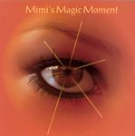

| Artist: | Salem Hill |
| Title: | Mimi's Magic Moment |
| Label: | Progrock Records |
| Length(s): | 62 minutes |
| Year(s) of release: | 2005 |
| Month of review: | [06/2006] |
| 1) | The Joy Gem | 15.03 |
| 2) | All Fall Down | 7.14 |
| 3) | Stolen By Ghosts | 21.29 |
| 4) | The Future Me | 18.53 |
All Fall Down is by far the shortest tune on this album. The song is a catchy singalong tune with the vengeance being in the instrumental middle with fast flute and acoustic guitar. Then the music powers up a bit with piano, and the flute comes back in, accompanied in places by organ. The band is now close to Camel. At the end the chorus is reprised.
Stolen By Ghosts is the longest track on this album, opening moodily with wavery violin. After the first accessible verse, sung with harmony vocals, the organ and drums set the pace with nice tension building. And slowly the epic unfolds. After quite a few minutes of symphonic bombast and pace, we come to a still pond of piano playing. We are back to the vocals too, being of the melancholic kind, and the lyrics are certainly none too happy. The violin only adds to this. Then the keyboards set in again, and after a short while, the music turns more bouncy/funky whatever. The pace is up here, and we are now in jazzrock territory with quite a bit of meandering on the part of the guitar, violin and organ. This is one of those parts I do not the reason for. A few minutes of this brings us back to the accessible melodies played on piano. The band is strongest in these melodic parts, because wherever they get them from: they have plenty of them. The repetitive chorus is sung with a bit more power, and roughness around the edges, going to an emotional high. The final few minutes are taken up by a very moody piece of music, in which the singer sounds far away. The vocal melody is good as always. In between the powerful voice of the previous climax comes in.
The Future Me opens with fast marimba style playing, accompanied by a jazzrock styled electric guitar and acoustic guitar. The playing is sharp and rather swinging. Around the five minute mark all we are left with is quiet keyboards and a bit of acoustic guitar, when the piano sets in. The vocal melodies are again starling, and as always on the accessible side, sung with verve. There is time for fusion again in the middle when the organ gets some time to meander. But then we are back to symphonic rock with keyboards a-flute, and the drums a-rumble. The song has an uplifting, climactic ending with Alyssa Hendryx coming in for vocal support.